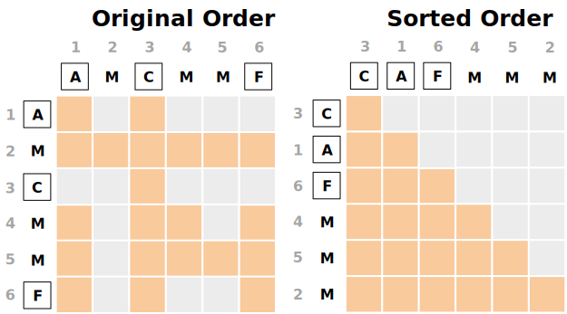
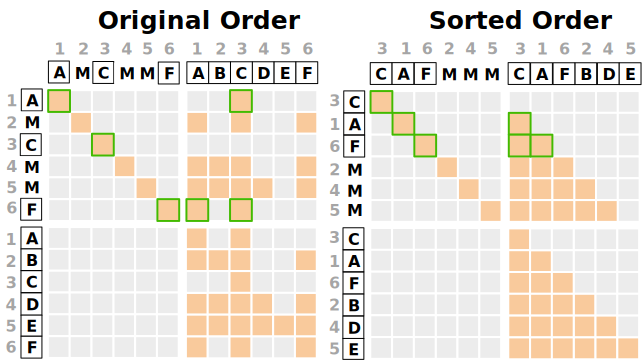
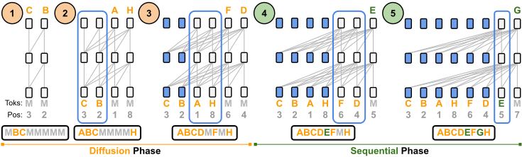
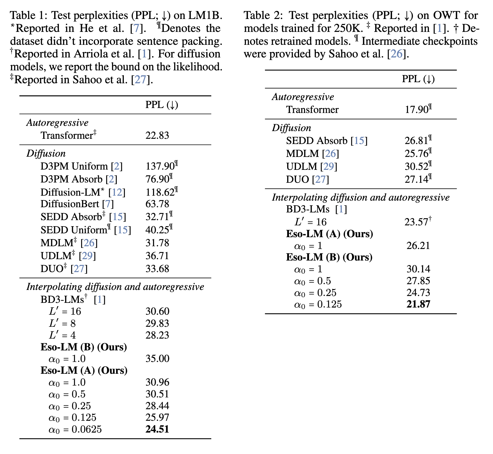
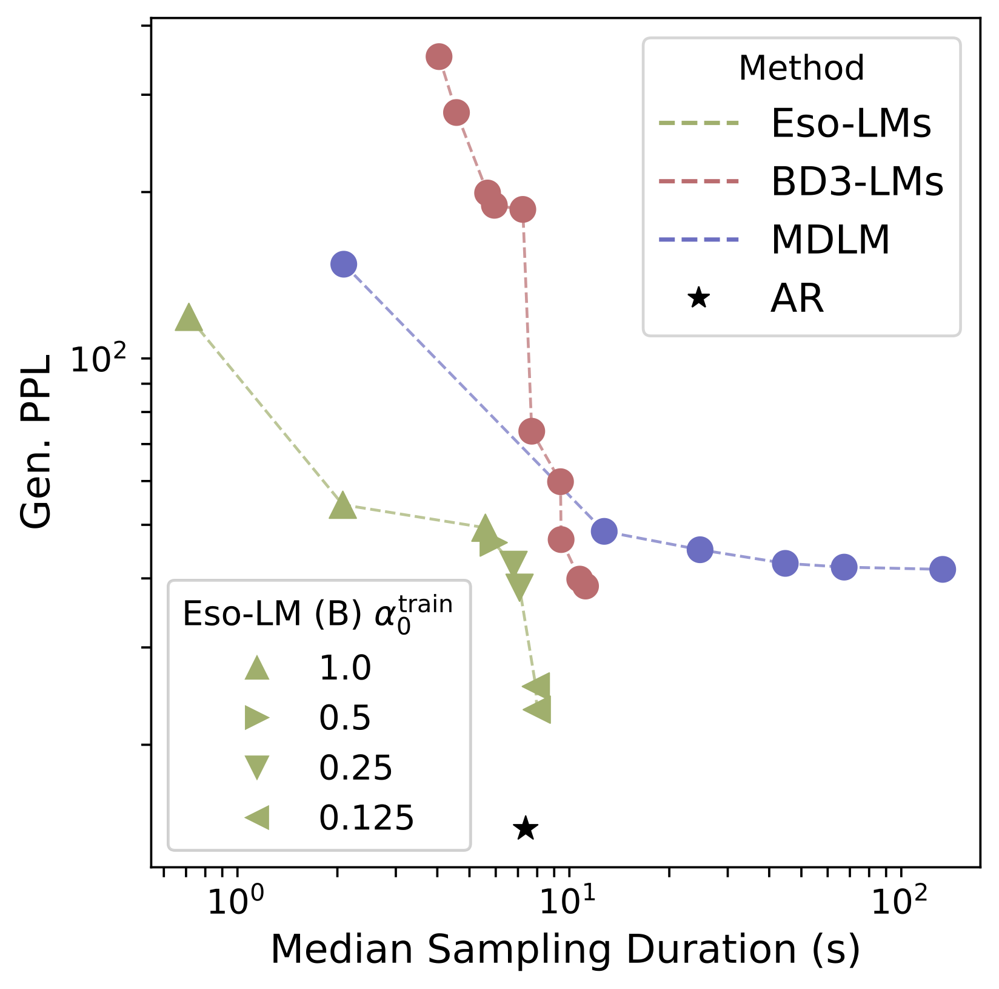

First paper to propose KV-caching for diffusion language models while retaining parallel generation.
Left: Efficient generation of an example sequence with our flagship model Eso-LM (B).
During the Diffusion Phase,
Eso-LMs denoise one or more, potentially non-neighboring mask tokens
(M) per step, just like masked diffusion models.
During the Sequential Phase,
Eso-LMs denoise the remaining mask tokens one at a time from left to right, just like autoregressive models but conditioned on left and right contexts.
Eso-LM (B) allows for
KV caching in both phases using
a single unified KV cache:
blue bounding boxes enclose
transformer cells building their KV cache;
a cell becomes blue once its KV cache is built.
The sequences below the transformers depict tokens in their natural order.
Right: When generating a sequence of length 8192 using the maximum possible number of function evaluations (NFEs = 8192), our flagship model Eso-LM (B) achieves up to 65× faster inference than MDLM and 3-4× faster inference than BD3-LMs.
Key Contributions:
We propose a new framework for language modeling: one that fuses AR and
MDM paradigms and outperforms the previous hybrid approach, BD3-LMs.
Ours is the first approach to enable KV caching for MDMs while preserving parallel generation, achieving up to
65× faster inference than standard MDMs and 3-4× faster inference than KV-cached semi-autoregressive baselines.
We show that BD3-LMs degrade at low sampling steps, while our method remains competitive with MDMs in the low NFE regime and with AR in the high NFE regime.
Our results establish a new state-of-the-art perplexity for discrete diffusion, narrowing the gap to autoregressive models.
Introduction
Masked diffusion models (MDMs) (e.g., MDLM) are a compelling alternative to AR models. However, they suffer from two key limitations:
Inference speed: Despite supporting parallel generation, MDMs are significantly slower than AR models in practice, largely due to the lack of KV caching—a crucial optimization for real-time applications like chat systems.
Generation quality: MDMs still show a noticeable likelihood gap on more complex language modeling tasks.
Recently proposed BD3-LMs address the speed issue by introducing a semi-autoregressive generation strategy. These models perform diffusion over fixed-length blocks of text sequentially. Because previously denoised blocks can be cached, BD3-LMs partially support KV caching and are faster than standard MDMs. However, we identify two key shortcomings in BD3-LMs:
Mode collapse at low sampling steps: When the number of denoising steps is reduced for faster inference, BD3-LMs exhibit severe degradation in sample quality—worse than both AR (at high NFEs) and MDMs (at low NFEs).
Incomplete caching: While KV caching is possible across blocks, intra-block diffusion still lacks KV support, limiting overall speed gains.
To address these challenges, we propose a new language modeling paradigm that fuses autoregressive and masked diffusion approaches. Our model is trained with a hybrid loss—a combination of AR and MDM objectives—which allows it to interpolate smoothly between the two paradigms in terms of perplexity and sample quality. This requires two key innovations:
A revised attention mechanism in the denoising transformer to support both AR and MDM styles of generation.
A new training and sampling procedure that enables KV caching within the diffusion phase, a feature previously unavailable in MDMs.
Due to the unconventional nature of this hybrid design, we name our method Esoteric Language Models (Eso-LMs).
Esoteric Language Models
In Eso-LMs, some tokens are generated in parallel via MDMs and the rest sequentially in a left-to-right fashion. Here we introduce the variant Eso-LM (B). Refer to our paper for the other variant Eso-LM (A).
Objective for training: ELBO
Let \( \mathcal{V} \) be the set of one-hot vectors corresponding to the tokens so that \( |\mathcal{V}| \) is the vocabulary size. Let \( L \) denote the sequence length.
Let \( \mathbf{x} \sim q_{\text{data}}(\mathbf{x}) \) in \( \mathcal{V}^L \) be a sample from the data distribution,
and let \( p_\theta \) be our model distribution parameterized by \( \theta \).
Eso-LMs decompose \( p_\theta \) into two components: an AR model \( p_\theta^{\text{AR}} \) and an MDM
\( p_\theta^{\text{MDM}} \). The MDM generates a partially masked sequence \( \mathbf{z}_0 \in \mathcal{V}^L \sim p_\theta^{\text{MDM}}(\mathbf{z}_0) \),
and the AR model finishes the remaining unmasking steps in an auto-regressive left-to-right manner:
\( p_\theta^{\text{AR}}(\mathbf{x} \mid \mathbf{z}_0) \).
The marginal likelihood of such a hybrid generative process is:
Although this sum is intractable, we can compute a variational bound on the true likelihood using a
posterior \( q(\mathbf{z}_0 \mid \mathbf{x}) \).
Since \( p_\theta^{\text{MDM}} \) models masked sequences, we choose \( q \) to be a simple masking distribution.
Specifically, our choice \( q \) independently masks
each token \( (\mathbf{x}^\ell)_{\ell \in [L]} \) with probability \( 1 - \alpha_0 \), where \( \alpha_0 \in [0, 1] \).
This leads to the following variational bound:
Given a denoising model \( \mathbf{x}_\theta : \mathcal{V}^L \to (\Delta^K)^L \) that parameterizes \(p_\theta^{\text{AR}}\) and \( p_\theta^{\text{MDM}} \), we show that the Negative Evidence Lower Bound (NELBO) factors into a sum of AR and MDM losses over masked positions:
Diffusion Phase. The denoising transformer receives \( \mathbf{z}_t \sim q_t(.|\mathbf{x})\), which contains the mask tokens to denoise, and \( \mathbf{x} \) as target. A random ordering \( \sigma \sim \mathcal{P}_L \) is sampled with the natural constraint that clean tokens in \(\mathbf{z}_t\) precede mask tokens in \(\mathbf{z}_t\) in \(\sigma\). Below is the example attention mask and its sorted version for implementation when \( \mathbf{x} = (A, B, C, D, E, F) \), \( \mathbf{z}_t = (A, M, C, M, M, F) \), and \( \sigma = (3, 1, 6, 4, 5, 2) \):

Sequential Phase.
The denoising transformer receives \( \mathbf{z}_0 \oplus \mathbf{x} \in \mathcal{V}^{2L} \), where \( \mathbf{z}_0 \sim q_0(.|\mathbf{x})\) contains the mask tokens to denoise, and computes loss by comparing the transformer output over \( \mathbf{z}_0 \) against target \( \mathbf{x} \). Concatenating \( \mathbf{z}_0 \) and \( \mathbf{x} \) at input is required during training because we do not use shift-by-one at the output like AR models. A random ordering \( \sigma \sim \mathcal{P}_L \) is sampled with the constraints that (i) clean tokens in \(\mathbf{z}_0\) precede mask tokens in \(\mathbf{z}_0\) in \(\sigma\) and (2) mask tokens are in natural order in \( \sigma \). Below is the example attention mask and its sorted version for implementation when \( \mathbf{x} = (A, B, C, D, E, F) \), \( \mathbf{z}_0 = (A, M, C, M, M, F) \), and \( \sigma = (3, 1, 6, 2, 4, 5) \):

Sampling
Efficient generation of an example sequence:

Experiments
Likelihood evaluation
We train and evaluate on the One Billion Words (LM1B) dataset and OpenWebText (OWT).

Generation speed
When generating a sequence of length 8192 using the maximum possible number of function evaluations (NFEs = 8192), Eso-LMs achieve up to 65× faster inference than MDLM and 3-4× faster inference than BD3-LMs:
Generation quality
We use Genenerative Perplexity (Gen. PPL) to evaluate the quality of samples generated by models trained on OWT. Low Gen. PPL means high quality. Sequence length is 1024.
To compare sampling efficiency, we also record the median sampling duration in seconds (across 5 trials) taken by each method to generate a single sample (i.e., batch size is 1).

Eso-LMs set new SOTA on the sampling speed–quality Pareto frontier, redefining what’s possible:
MDLM-level perplexity at high speed
AR-level perplexity when needed
No mode collapse at low steps — unlike Block Diffusion
BibTeX
@misc{sahoo2025esotericlanguagemodels,
title={Esoteric Language Models},
author={Subham Sekhar Sahoo and Zhihan Yang and Yash Akhauri and Johnna Liu and Deepansha Singh and Zhoujun Cheng and Zhengzhong Liu and Eric Xing and John Thickstun and Arash Vahdat},
year={2025},
eprint={2506.01928},
archivePrefix={arXiv},
primaryClass={cs.CL},
url={https://arxiv.org/abs/2506.01928},
}
 Colab
Colab
.svg)
.svg)